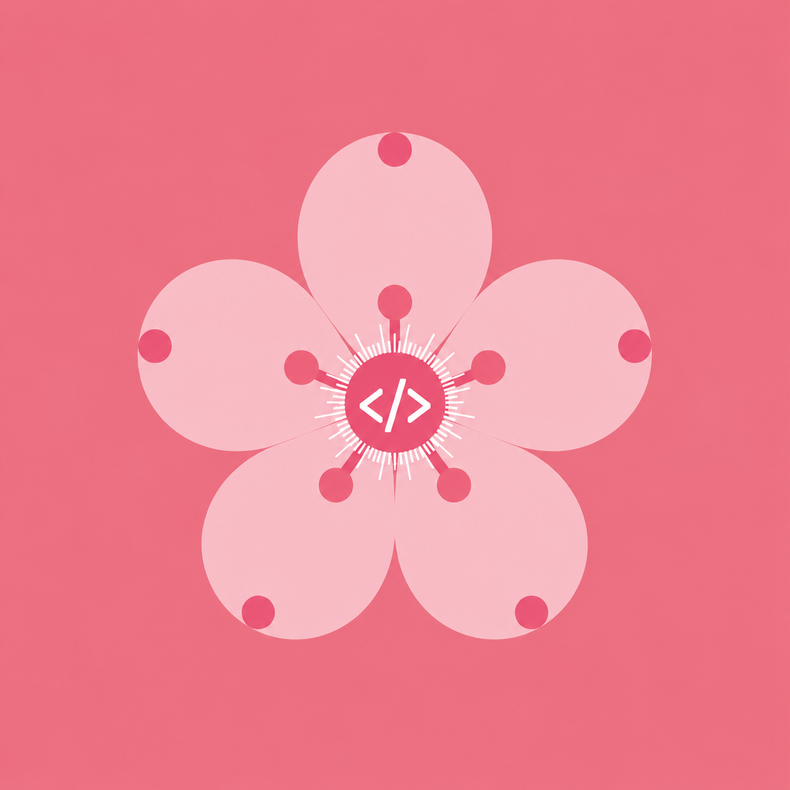

Sakura HacksA fast-paced sprint where your ideas turn into community software solutions. Pick the track that fits your skill level best.
Designed for 6th-8th graders exploring code for the first time. Teams build interactive games or tools using Scratch block environments.
Designed for students with minor experience in text-based languages. Build clean web apps running Python, HTML/CSS, or Java compilers.